01 全链路业务避坑
不止于界面执行，熟悉 HTML/CSS 与前端逻辑。将复杂业务流程转化为清晰体验，多类项目 B 端 + C 端项目主导过 3–4 轮，能提前避开研发落地的常见坑，保障高还原度交付。
设计优势
不止于界面执行，熟悉 HTML/CSS 与前端逻辑。将复杂业务流程转化为清晰体验，多类项目 B 端 + C 端项目主导过 3–4 轮，能提前避开研发落地的常见坑，保障高还原度交付。
具备独特的“B 端思维 + C 端视角”，主导过百万级用户金融与电商产品。擅长兼顾新用户效率与专业操作效能。将经验转化为团队的设计资产（设计系统），而非个人技能。
熟练运用 AIGC 工具，将 AI 融入需求拆解、风格探索与多尺寸交付。能通过 AI 工作流将重复性交付时间压缩 50% 以上，推动设计从界面执行走向策略决策。
工作经历
UX/UI 设计师（远程）
天渠科技
独立负责金融科技、AI 工具等产品 0 到 1 全链路设计。主导设计系统与组件库搭建，引入 AI 辅助，将概念周期缩短 30%。
设计负责人（UX/UI）
一牧数据
主导 SaaS/B 端产品信息架构与交互方案，闭环推动设计高质落地。负责 Web、数据库、SaaS 平台多端交付，兼顾 B 端严谨与 C 端易用。
设计经理 / 研发部
百倍网络科技
统筹多条产品线体验设计，建立标准化流程，提升跨项目协作效率。服务金融、Web3 钱包、大数据等行业，管理并赋能设计团队。
资深 UI / 设计组长
万合网络
负责核心产品交互与团队日常管理，将竞品洞察转化为体验优化。服务电商、金融、快消等行业运营设计与工具类应用。
美术指导
德国西克传感器
主导品牌 VI 建设与规范输出，输出完整品牌视觉解决方案。
设计工具
探索并实践 AIGC 工具链，将其深度集成至设计全流程（概念发散 → 视觉精修 → 多端交付）。将 AI 作为提效模块，最终视觉把控与业务判断仍由我负责。
